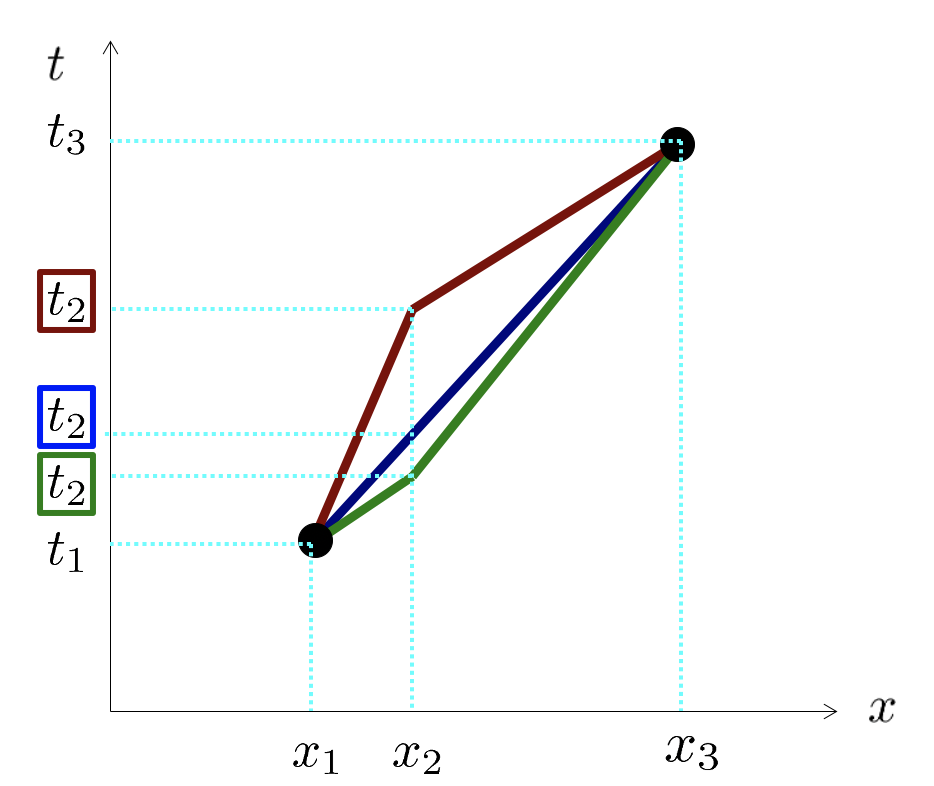

Forrige side🙂 🙁Maksimal aldringPADLET

Men hva står det egentlig her??? La oss ekstrapolere litt: Sett at du nå utvider verdenslinja med ett linjestykke til, et rett linje fra punkt 3 til punkt 4. Hvis vi nå gjentok denne utledningen fra punkt 2 til punkt 4 så vil vi jo nødvendigvis helt tilsvarende finne: $$\frac{\Delta t_{23}}{\Delta\tau_{23}}=\frac{\Delta t_{34}}{\Delta\tau_{34}}$$ Og slik fortsetter det utover verdenslinja. Det sier oss vel at vi har en bevart størrelse langs bevegelsen til ballen? Et uttrykk som generelt er bevart gjennom hele ballens bevegelse? Hvilket???